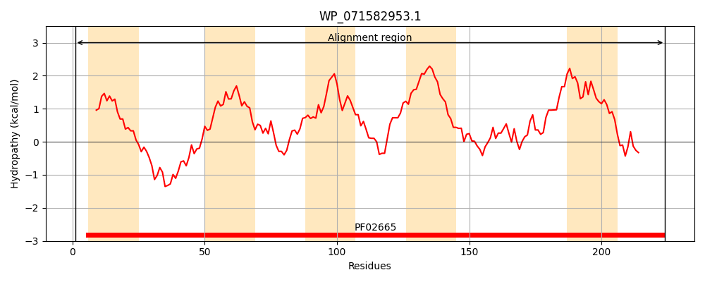
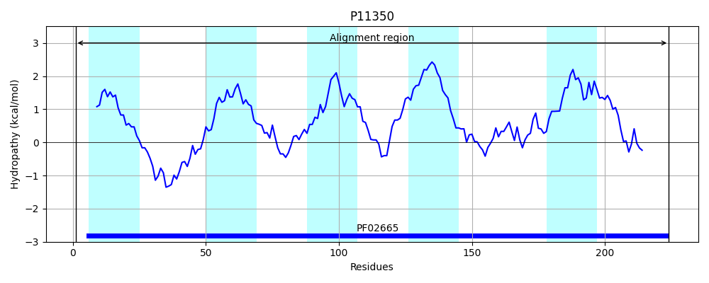
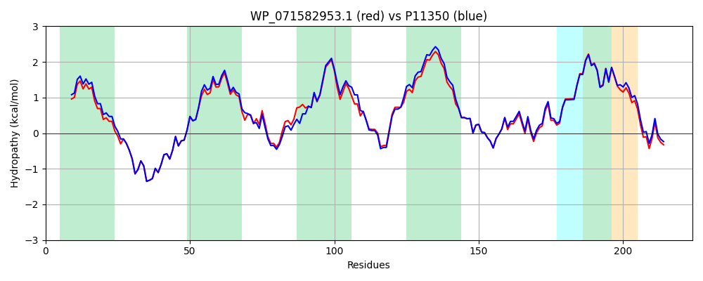

Hit Accession: P11350
Hit TCID: 5.A.3.1.1
Hit Description: gnl|BL_ORD_ID|9033 gnl|TC-DB|P11350|5.A.3.1.1 Respiratory nitrate reductase 1 gamma chain (EC 1.7.99.4) (Cytochrome B-NR) - Escherichia coli.
Mach Len: 224
e:0.000000
Query TMS Count : 5
Hit TMS Count: 5
TMS-Overlap Score: 4.550000
Predicted Substrates:CHEBI:10545;electron
BLAST Alignment:
Score: 1084 , Bit scores: 422 bits, E-value: 1.6e-152, Alignment length: 224, Percentage identity: 91
Query: 1 MHFLNMFFFDIYPYIAGSVFLIGSWLRYDYGQYTWRAASSQMLDRKGMNLASNLFHIGILGIFAGHFLGMLTPHWMYESFLPIDVKQKMAMIAGGACGVMTLVGGLLLLKRRLLSPRVRATTTGADILILSLLMVQCALGLLTIPFSAQHMDGSEMMKLVGWAQSVVTFRGGASQHLDGVAFIFRVHLVLGMTLFLLFPFSRLVHIWSAPVEYLTRKYQIVRAR 224
M FLNMFFFDIYPYIAG+VFLIGSWLRYDYGQYTWRAASSQMLDRKGMNLASNLFHIGILGIF GHF GMLTPHWMYE++LPI+VKQKMAM AGGA GV+ L+GG+LLLKRRL SPRVRATTTGADILILSLL++QCALGLLTIPFSAQHMDGSEMMKLVGWAQSVVTF GGASQHLDGVAFIFR+HLVLGMTLFLLFPFSRL+HIWS PVEYLTRKYQ+VRAR
Sbjct: 1 MQFLNMFFFDIYPYIAGAVFLIGSWLRYDYGQYTWRAASSQMLDRKGMNLASNLFHIGILGIFVGHFFGMLTPHWMYEAWLPIEVKQKMAMFAGGASGVLCLIGGVLLLKRRLFSPRVRATTTGADILILSLLVIQCALGLLTIPFSAQHMDGSEMMKLVGWAQSVVTFHGGASQHLDGVAFIFRLHLVLGMTLFLLFPFSRLIHIWSVPVEYLTRKYQLVRAR 224 | Protein Hydropathy Plots: |
|---|
|  |  |
Pairwise Alignment-Hydropathy Plot:
|
|---|
|  |